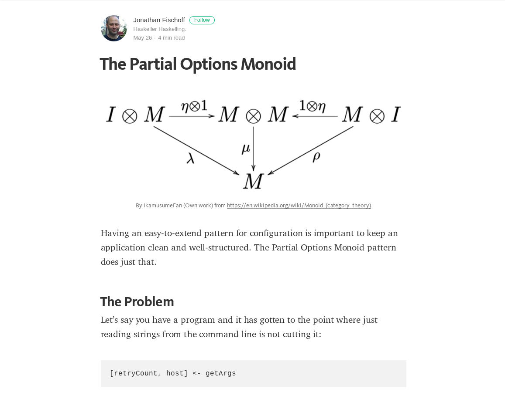

Your first Haskell app
Andrew McCluskey
Motivation
Getting started can be intimidating
Applying concepts to a real application
Navigating the ecosystem
My experience
Write the code!
Working examples
Assumed knowledge
Maybe
Either
Monoid
Functor
Applicative
Monad
...BUT you haven't written an application
App
Requirements
I want comments on my static blog, but I don't want to deploy a database or use a third party service
Par·ley n.
To have a discussion, especially with an enemy.
Spec
| Operation | Route |
|---|---|
| Add to a topic | /<topic>/add |
| View comments for a topic | /<topic>/view |
| List topics | /list |
Libraries
| Library | Purpose |
|---|---|
aeson |
JSON encoding |
sqlite-simple |
Talk to SQLite |
sqlite-simple-errors |
Exceptions to values |
optparse-applicative |
Command line parsing |
wai |
Web application interface |
warp |
Web server |
ONLY AN EDUCATIONAL EXAMPLE
Proof
Concepts
Model the domain with data
Model actions as data
Error values over exceptions
Loose types and IO at the edges
Types
Model the domain
data Comment = Comment CommentId
Topic
CommentText
UTCTime
deriving Showdata Error = NoTopicInRequest
| UnknownRoute
| NoCommentText
| SQLiteError SQLiteResponsedata ContentType = PlainText
| JSON
render :: ContentType -> ByteString
render PlainText = "text/plain"
render JSON = "text/json"Actions as data
data ParleyRequest = AddRequest Topic CommentText
| ViewRequest Topic
| ListRequestnewtype
- Zero cost abstraction
- Call out semantics
- Compiler errors
newtype Table = Table Text
deriving (Show)
newtype CommentId = CommentId Integer
deriving (Eq, Show, ToJSON)
newtype Port = Port { unPort :: Int16 }
deriving ShowSmart constructors
newtype Topic = Topic {getTopic :: Text}
deriving (Eq, Show)
newtype CommentText = CommentText {getComment :: Text}
deriving (Eq, Show)module Parley.Types ( ...
, Topic (getTopic)
, CommentText (getComment)
...
)mkTopic :: Text -> Either Error Topic
mkTopic "" = Left NoTopicInRequest
mkTopic t = pure $ Topic t
mkCommentText :: Text -> Either Error CommentText
mkCommentText "" = Left NoCommentText
mkCommentText t = pure $ CommentText tmodule Parley.Types ( ...
, Topic (getTopic)
, CommentText (getComment)
, mkTopic
, mkCommentText
...
)Untyped at the border
data DbComment =
DbComment { dbCommentId :: Integer
, dbCommentTopic :: Text
, dbCommentBody :: Text
, dbCommentTime :: UTCTime
}
deriving ShowJSON
instance ToJSON Comment where
toJSON (Comment id' topic comment time) =
object [ "id" .= id'
, "topic" .= topic
, "comment" .= comment
, "time" .= time
]
toEncoding (Comment id' topic comment time) =
pairs ( "id" .= id'
<> "topic" .= topic
<> "comment" .= comment
<> "time" .= time
)Flow
Wai
Web Application Interface: a low level interface between web servers and applications
app :: Request -> IO Responseapp :: Request
-> (Response -> IO ResponseReceived)
-> IO ResponseReceivedapp :: ParleyDb
-> Request
-> (Response -> IO ResponseReceived)
-> IO ResponseReceivedmkRequest :: Request
-> IO (Either Error ParleyRequest)
handleRequest :: ParleyDb
-> ParleyRequest
-> IO (Either Error Response)
handleError :: Error
-> Responseapp :: ParleyDb
-> Request
-> (Response -> IO ResponseReceived)
-> IO ResponseReceived
app db request cb = do
erq <- mkRequest request
app :: ParleyDb
-> Request
-> (Response -> IO ResponseReceived)
-> IO ResponseReceived
app db request cb = do
let handleRq (Left e) = pure (Left e)
handleRq (Right r) = handleRequest db r
erq <- mkRequest request
ersp <- handleRq erq
app :: ParleyDb
-> Request
-> (Response -> IO ResponseReceived)
-> IO ResponseReceived
app db request cb = do
let handleRq (Left e) = pure (Left e)
handleRq (Right r) = handleRequest db r
handleRsp (Left e) = handleError e
handleRsp (Right rsp) = rsp
erq <- mkRequest request
ersp <- handleRq erq
cb (handleRsp ersp)Routing
mkRequest :: Request
-> IO (Either Error ParleyRequest)
mkRequest request =
case pathInfo request of
["list"] -> pure (Right ListRequest)
mkRequest :: Request
-> IO (Either Error ParleyRequest)
mkRequest request =
case pathInfo request of
[t,"view"] -> pure (mkViewRequest t)
["list"] -> pure (Right ListRequest)
mkRequest :: Request
-> IO (Either Error ParleyRequest)
mkRequest request =
case pathInfo request of
[t,"add"] -> fmap (mkAddRequest t)
(strictRequestBody request)
[t,"view"] -> pure (mkViewRequest t)
["list"] -> pure (Right ListRequest)
mkRequest :: Request
-> IO (Either Error ParleyRequest)
mkRequest request =
case pathInfo request of
[t,"add"] -> fmap (mkAddRequest t)
(strictRequestBody request)
[t,"view"] -> pure (mkViewRequest t)
["list"] -> pure (Right ListRequest)
_ -> pure (Left UnknownRoute)Request -> Response
handleRequest :: ParleyDb
-> ParleyRequest
-> IO (Either Error Response)
handleRequest db rq =
case rq of
AddRequest t c -> handleAdd db t c
handleRequest :: ParleyDb
-> ParleyRequest
-> IO (Either Error Response)
handleRequest db rq =
case rq of
AddRequest t c -> handleAdd db t c
ViewRequest t -> getComments db t >>= dbJSONResponse
handleRequest :: ParleyDb
-> ParleyRequest
-> IO (Either Error Response)
handleRequest db rq =
case rq of
AddRequest t c -> handleAdd db t c
ViewRequest t -> getComments db t >>= dbJSONResponse
ListRequest -> getTopics db >>= dbJSONResponsedbJSONResponse :: ToJSON a
=> Either Error a
-> IO (Either Error Response)
dbJSONResponse :: ToJSON a
=> Either Error a
-> IO (Either Error Response)
dbJSONResponse ea =
pure (fmap responseFromJSON ea)dbJSONResponse :: ToJSON a
=> Either Error a
-> IO (Either Error Response)
dbJSONResponse ea =
let responseFromJSON a =
responseLBS HT.status200
[contentHeader JSON]
(encode a)
in pure (fmap responseFromJSON ea)Error -> Response
handleError :: Error -> Response
handleError e =
case e of
UnknownRoute ->
rsp HT.status404 "Not found :("
handleError :: Error -> Response
handleError e =
case e of
NoTopicInRequest ->
rsp HT.status400 "Empty topics not allowed"
UnknownRoute ->
rsp HT.status404 "Not found :("
NoCommentText ->
rsp HT.status400 "Empty body text not allowed"
handleError :: Error -> Response
handleError e =
case e of
NoTopicInRequest ->
rsp HT.status400 "Empty topics not allowed"
UnknownRoute ->
rsp HT.status404 "Not found :("
NoCommentText ->
rsp HT.status400 "Empty body text not allowed"
SQLiteError se ->
rsp HT.status500 (dbError se)
handleError :: Error -> Response
handleError e =
case e of
NoTopicInRequest ->
rsp HT.status400 "Empty topics not allowed"
UnknownRoute ->
rsp HT.status404 "Not found :("
NoCommentText ->
rsp HT.status400 "Empty body text not allowed"
SQLiteError se ->
rsp HT.status500 (dbError se)
where
dbError se = "Database error: " <> LBS8.pack (show se)handleError :: Error -> Response
handleError e =
case e of
NoTopicInRequest ->
rsp HT.status400 "Empty topics not allowed"
UnknownRoute ->
rsp HT.status404 "Not found :("
NoCommentText ->
rsp HT.status400 "Empty body text not allowed"
SQLiteError se ->
rsp HT.status500 (dbError se)
where
rsp s t = responseLBS s [contentHeader PlainText] t
dbError se = "Database error: " <> LBS8.pack (show se)Config

data Config =
Config { port :: Port
, dbPath :: FilePath
}data PartialConfig =
PartialConfig { pcPort :: Last Port
, pcDBPath :: Last FilePath
}newtype Last a = Last {getLast :: Maybe a}
instance Monoid (Last a) where
mempty = Last Nothing
l `mappend` Last Nothing = l
_ `mappend` r = rinstance Monoid PartialConfig where
mempty = PartialConfig mempty mempty
mappend a b = mempty { pcPort = pcPort a <> pcPort b
, pcDBPath = pcDBPath a <> pcDBPath b
}
(defaultConfig <> fileConfig <> commandLineConfig)
parseOptions :: FilePath -> IO (Either ConfigError Config)
parseOptions configFilePath = do
fileConfig <- parseConfigFile configFilePath
commandLineConfig <- parseCommandLine
let pc = (defaultConfig <> fileConfig <> commandLineConfig)
pure (makeConfig pc)makeConfig :: PartialConfig -> Either ConfigError Config
makeConfig :: PartialConfig -> Either ConfigError Config
makeConfig pc = do
let lastToEither e (Last Nothing) = Left e
lastToEither _ (Last (Just v)) = Right v
makeConfig :: PartialConfig -> Either ConfigError Config
makeConfig pc = do
let lastToEither e (Last Nothing) = Left e
lastToEither _ (Last (Just v)) = Right v
port' <- lastToEither MissingPort (pcPort pc)
dbPath' <- lastToEither MissingDbPath (pcDBPath pc)
pure Config {port = port', dbPath = dbPath'}CLI
optparse-applicative
partialConfigParser :: Parser PartialConfig
partialConfigParser =
PartialConfig <$> portParser <*> dbParserparley - simple comment management
Usage: parley [-p|--port PORT] [-d|--database SQLITE_FILE]
Manage comments for a web blog
Available options:
-p,--port PORT TCP port to accept requests on
-d,--database SQLITE_FILE
Path to sqlite database
-h,--help Show this help textexecParser :: Parser a -> IO a
dbParser :: Parser (Last FilePath)
dbParser =
optional strOptiondbParser :: Parser (Last FilePath)
dbParser =
Last <$> optional strOptiondbParser :: Parser (Last FilePath)
dbParser =
let mods = long "database"
<> short 'd'
<> metavar "SQLITE_FILE"
<> help "Path to sqlite database"
in Last <$> optional (strOption mods)portParser :: Parser (Last Port)
portParser =
let mods = long "port"
<> short 'p'
<> metavar "PORT"
<> help "TCP port to accept requests on"
portReader = eitherReader (fmap Port . readEither)
in Last <$> optional (option portReader mods)
option portReaderreadEither :: Read a => String -> Either String a
portReader = eitherReader (fmap Port . readEither)
option portReaderexecParser :: Parser a -> IO a
execParser :: ParserInfo a -> IO a
commandLineParser :: ParserInfo PartialConfig
commandLineParser =
info partialConfigParsercommandLineParser :: ParserInfo PartialConfig
commandLineParser =
info (helper <*> partialConfigParser)commandLineParser :: ParserInfo PartialConfig
commandLineParser =
let mods = fullDesc
<> progDesc "Manage comments for a web blog"
<> header "parley - simple comment management"
in info (helper <*> partialConfigParser) modsDatabase
sqlite-simple-errors
type DatabaseResponse a = Either SQLiteResponse a
runDBAction :: IO a -> IO (DatabaseResponse a)ParleyDb
data ParleyDb = ParleyDb Connection TableQueries
newtype Query = Query {fromQuery Text}
query :: (ToRow q, FromRow r)
=> Connection -> Query -> q -> IO [r]
execute :: ToRow q
=> Connection -> Query -> q -> IO ()Only
newtype Only a = Only {fromOnly :: a}Initialisation
initDB :: FilePath
-> Table
-> IO (Either SQLiteResponse ParleyDb)
initDB :: FilePath
-> Table
-> IO (Either SQLiteResponse ParleyDb)
initDB dbPath t@(Table tbl) = runDBAction $ do
initDB :: FilePath
-> Table
-> IO (Either SQLiteResponse ParleyDb)
initDB dbPath t@(Table tbl) = runDBAction $ do
conn <- open dbPath
pure (ParleyDb conn t)initDB :: FilePath
-> Table
-> IO (Either SQLiteResponse ParleyDb)
initDB dbPath t@(Table tbl) = runDBAction $ do
let createQ =
Query ("CREATE TABLE IF NOT EXISTS " <> tbl
<> " (id INTEGER PRIMARY KEY, topic TEXT,"
<> " comment TEXT, time INTEGER)")
conn <- open dbPath
execute_ conn createQ
pure (ParleyDb conn t)Pattern
dbToParley ::
IO [a]
dbToParley ::
IO [a]
-> IO (Either Error [b])
dbToParley :: (a -> Either Error b)
-> IO [a]
-> IO (Either Error [b])
dbToParley :: (a -> Either Error b)
-> IO [a]
-> IO (Either Error [b])
dbToParley f a = do
result <- runDBAction a
dbToParley :: (a -> Either Error b)
-> IO [a]
-> IO (Either Error [b])
dbToParley f a = do
result <- runDBAction a
case result of
Left e -> (pure . Left . SQLiteError) e
dbToParley :: (a -> Either Error b)
-> IO [a]
-> IO (Either Error [b])
dbToParley f a = do
result <- runDBAction a
case result of
Left e -> (pure . Left . SQLiteError) e
Right as -> (pure . Right . rights . fmap f) asViewing
getComments :: ParleyDb
-> Topic
-> IO (Either Error [Comment])
getComments :: ParleyDb
-> Topic
-> IO (Either Error [Comment])
getComments (ParleyDb conn _) t =
let q = "SELECT id, topic, comment, time "
<> "FROM comments WHERE topic = ?"
p = Only (getTopic t)
getComments :: ParleyDb
-> Topic
-> IO (Either Error [Comment])
getComments (ParleyDb conn _) t =
let q = "SELECT id, topic, comment, time "
<> "FROM comments WHERE topic = ?"
p = Only (getTopic t)
result = query conn q p
getComments :: ParleyDb
-> Topic
-> IO (Either Error [Comment])
getComments (ParleyDb conn _) t =
let q = "SELECT id, topic, comment, time "
<> "FROM comments WHERE topic = ?"
p = Only (getTopic t)
result = query conn q p
in dbToParley fromDbComment resultTHE END
You can use Haskell to write a web app
You can use Haskell to write almost anything
You don't need to learn all of Haskell's abstractions to write an app or get big benefits
References
- http://blog.charleso.org/lambdajam-web-functions
- http://blog.infinitenegativeutility.com/2016/8/resources--laziness--and-continuation-passing-style
- https://medium.com/@jonathangfischoff/the-partial-options-monoid-pattern-31914a71fc67
The app
https://github.com/qfpl/parley
Get help
#qfpl
#bfpg